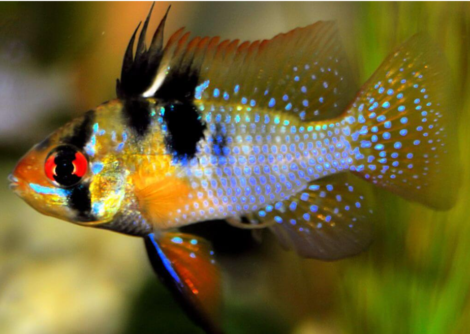
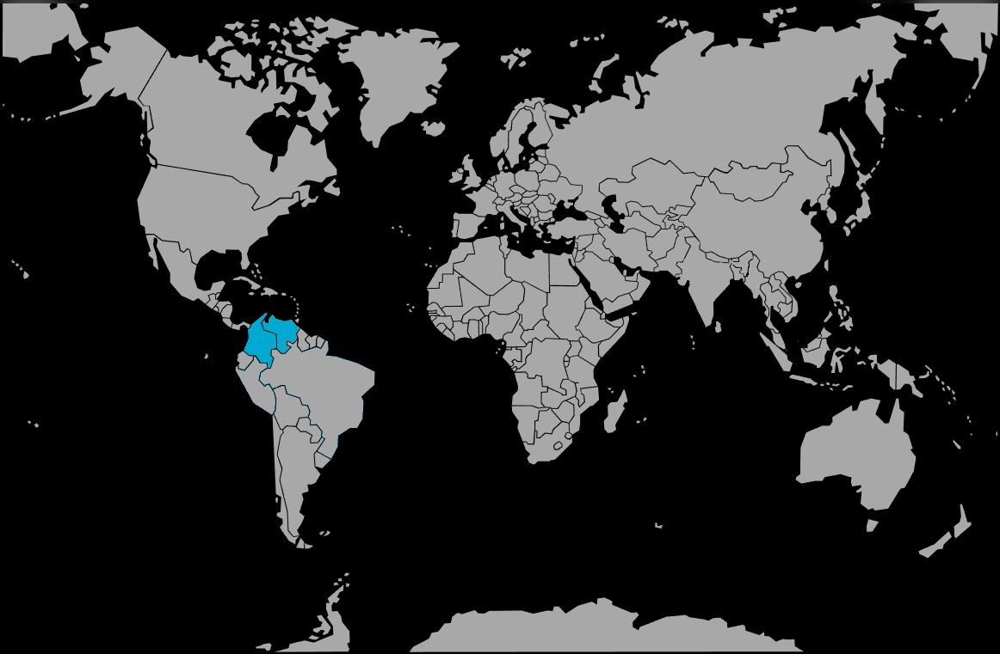

Systématique
- Ordre : Cichliformes
- Famille : Cichlidae
- Genre : Mikrogeophagus
- Espèce : M. ramirezi

Mikrogeophagus ramirezi, communément appelé "Rami" ou Cichlidé papillon, est sans doute le cichlidé nain le plus populaire en aquariophilie.
Il mesure adulte entre 5 et 7 cm. C'est un poisson aux couleurs éclatantes, arborant un mélange de jaune, de bleu électrique iridescent, de rouge et de noir. Une barre noire verticale traverse l'œil. Il existe de nombreuses variétés d'élevage (Gold, Bleu électrique, Voile, Ballon...), mais la forme sauvage reste la plus robuste, bien que l'espèce soit globalement fragile.
C'est un poisson de caractère, curieux et intelligent, qui reconnaît souvent son soigneur.
Le Ramirezi vit en couple soudé et fidèle (monogame). Il est territorial, surtout en période de reproduction, mais reste relativement paisible envers les autres espèces si le volume est suffisant.
Il occupe principalement la zone inférieure et médiane de l'aquarium. Il passe une partie de son temps à "tamiser" le sable à la recherche de nourriture (d'où son nom de genre Mikrogeophagus signifiant "petit mangeur de terre"). Il ne doit pas être maintenu avec des poissons trop remuants ou agressifs qui le stresseraient.
Mode : ovipare (pondeur sur substrat découvert).
La reproduction est fascinante : le couple nettoie une pierre plate ou une large feuille, ou creuse une petite cuvette dans le sable. La femelle y dépose 200 à 400 œufs.
Les deux parents protègent et ventilent les œufs, puis gardent les alevins en nage libre. Cependant, en aquarium, les parents (souvent issus d'élevages intensifs) perdent parfois leur instinct et mangent leurs œufs. Une eau très douce et acide est indispensable pour l'éclosion.
Dimorphisme sexuel : Le mâle est plus grand et possède un deuxième rayon de la nageoire dorsale très allongé (en forme de crête). La femelle est plus petite, plus ronde, et présente une tache rose/rouge violacée bien visible sur le ventre, surtout lorsqu'elle est prête à pondre.
Espérance de vie : Courte, environ 2 à 3 ans en captivité.
Il est originaire du bassin de l'Orénoque, au Venezuela et en Colombie (région des Llanos). Il vit dans les eaux calmes des savanes inondées, les lagunes et les ruisseaux à courant très lent. L'eau y est chaude, douce, acide et souvent teintée par la végétation.
Répartition

Origine naturelle :
- Amérique du Sud.
- Venezuela & Colombie (Bassin de l'Orénoque).
- Llanos (plaines inondables).
Paramètres de maintenance
Température : 26 à 30 °C (C'est un poisson d'eau chaude, il dépérit en dessous de 25°C).
pH : 5,0 à 7,0 (idéalement acide, < 6,8).
GH : 1 à 10 °dGH (eau douce impérative).
Pollution : Extrêmement sensible aux nitrates (> 10-15 mg/L est déjà risqué).
Volume conseillé : Minimum 60 à 80 L pour un couple. Un bac planté avec des cachettes est obligatoire.
Régime alimentaire
Régime : omnivore / micro-prédateur.
Il tamise le sable pour trouver des animalcules.
En aquarium, il est parfois difficile. Il faut privilégier une nourriture de qualité : granulés pour cichlidés nains et surtout du vivant ou du congelé (artémias, vers de vase rouges) pour stimuler la reproduction et les couleurs.